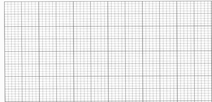
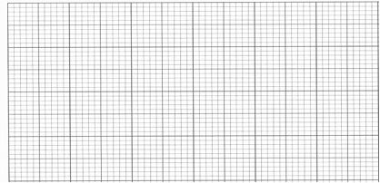

|
16. Rachel is a marine biologist studying a pod of wild dolphins. The
sonar system of her boat detects the dolphins straight ahead. It takes 5 s for Rachel’s boat to accelerate
uniformly from rest to its top speed of 15 m/s. After travelling at top
speed for 35 s, Rachel is nearing the dolphins so she cuts the engines
and the boat uniformly slows down for 15 s until it comes to a stop. |
|
a) Draw a graph of velocity versus time for
the boat during Rachel’s entire journey described above. Graphs must be drawn to scale and axes must be labelled correctly. Velocity-Time Graph for Boat |
|
b) Draw a graph of acceleration versus time
for the boat during Rachel’s entire journey described above. Graphs must be drawn to scale and axes must
be labelled correctly. Acceleration-Time Graph for Boat
 |
|
|
|
4 |
3 |
2 |
1 |
0 |